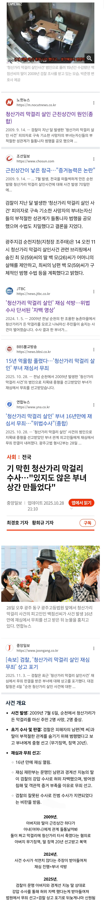

15년이 지나서야 무죄로 석방됨
강압수사를 통한 허위 자백이었다는 게 받아들여짐

15년이 지나서야 무죄로 석방됨
강압수사를 통한 허위 자백이었다는 게 받아들여짐
그저 국평임 ㅋㅋㅋㅋㅋ 경찰이랑 검찰 진ㅋ자 구별 못할걸
저런 사건나와도 애미뒤진 사형충새끼들은 앵무새마냥 사형 거리겠지
걔네들은 법치와 정의가 아니라 자기들 도파민 충족이 실제 이유니까
엄벌주의의 입장에서 보면 저런 경우엔 부당수사한 경찰도 사형 때리거나 피해자에 준하는 대가를 치르게 해주면 됨
억울한 일이 발생할 경우 충분한 보상을 해주거나, 설령 못해주더라도 동종 범죄의 모방을 저지를 생각조차 못하도록 압박해서 사전에 방지하는게 엄벌주의의 의의라고 생각해서 나는
사형 집행한 뒤에 밝혀지면 보상을 어떻게해
사형을 어떻게 충분한 보상을 해줘? 부활시켜줄 수 있음? ㅋㅋ
부당수사한 경찰도 사형 때렸는데 알고 보니 꼬리자르기로 짬당한거였다면? 그 경찰도 다시 부활시켜줌? ㅋㅋ
엄벌때렸는데 그게 억울하게 누명쓰고 뒤진거면 어쩔거임?
만약 누명쓰고 사형당해서 다시 조명받기 힘들어진다면?
권력에 사람을 죽일 수 있는 권한을 주는건 위험한 일임
미치겠네ㅋㅋㅋ 경찰 백날 사형시켜봐라 죽은 사람이 돌아오나. 죽음에 대한 합당한 보상 따위는 없음.
그럼 엄벌 자체를 못 핶ㄲㄲㄲㄲㄲㄲㄲㄲㄲ 어떤 미친놈이 엄정하게 수사하겠냐
아니 어쩜 이렇게 사람이 한 치 앞을 못 볼 수가 있지? 이런 사람도 밥 먹고 물 마시고 돈 쓴다고?
어차피 사형안되는 나라인데 보통 사형 찬성하는 애들은 조두순 유영철같은 인간쓰레기들 찬성하지 않나
화성연쇄살인사건 범인으로 잡혔던 윤성여씨도 사실 무죄였음. 나도 조두순 유영철같은 인간 쓰레기보다 못한 새끼들은 죽어 마땅하다고 생각하지만, 그래도 사형은 존재하면 안된다고 생각함.
그리고 사형 찬성하는 사람들은 경찰, 검찰, 법원이 어떤 사건이든 100% 무결하게 처리한다고 믿는건지 묻고싶음.
검찰이나 경찰이나...어휴
이게 맞음 에휴
검찰이 저지랄 하면 묻히고 경찰이 저지랄 하면 그래도 처벌 받겠지. 검사 기소율이 0.1프로 라며
서로 견제 해도 썩는데 안하면 어떨지 걱정이다
견제가 필요하긴한데
지금단계에서는 상하관계니까 검찰 없애긴 해야됨
근데 검찰을 없애고
경찰을 한 세개쯤 만든다든지 해야되는데
군바리식 해결법으로 처리중임ㅋㅋ
문제생기면 일단 없앰 ㅇㅈㄹ
견제할때 이미 무기징역이 나왔는데?
그것이 알고 싶다에 나오겠다
이미나왔을걸?
꼬꼬무에서 봤음
아
제일 역겨운 점 : 억울하게 징역살아도 경찰 검사 판사 누구도 처벌 안받음 ㅋㅋㅋ
"AI가 재판하면 책임은 누가져요?!"
15년지나서 석연찮다고말한사람 누굴까 ㅎㄷ
경찰 잘못한건 경찰만 욕하더니
이런건 검찰이나 경찰이나 이러네
둘 다 쓰레기니까 떡이나 견이나 이러지
뭐 떡검 묻어있으면 견찰이 잘한거라도 됨?
도대체 뭔 병신같은 소리여
님... 님같은 사람도 알아듣기 쉽게 설명해드릴게요.
A가 잘못했음 -> A가 욕먹음
A,B 가 잘못했음 -> 둘 다 욕먹음.
이제 이해되셨죠?
저거 가장 큰 문제는 진범은 잡을 생각도 못한다는거.
이제 오래되서 잡을수있는 증거같은게 하나도 없어.
진범은 완전범죄라서 좋다고 보고있겠지.
결국 진범은 누군지도 모르는거네
검경이 쌍으로 지랄이네ㅋㅋ 예전부터 이랬겠지 뭐
3기관 만들어서 독립적으로 가위 바위 보처럼 맞물리게 견제해야하는거 아니냐
하도 요즘 언론에서 떠들어대니 반쯤 세뇌 당한 듯 ㅋㅋㅋ
원래 시나리오 작성은 검찰 특기인데 🥴